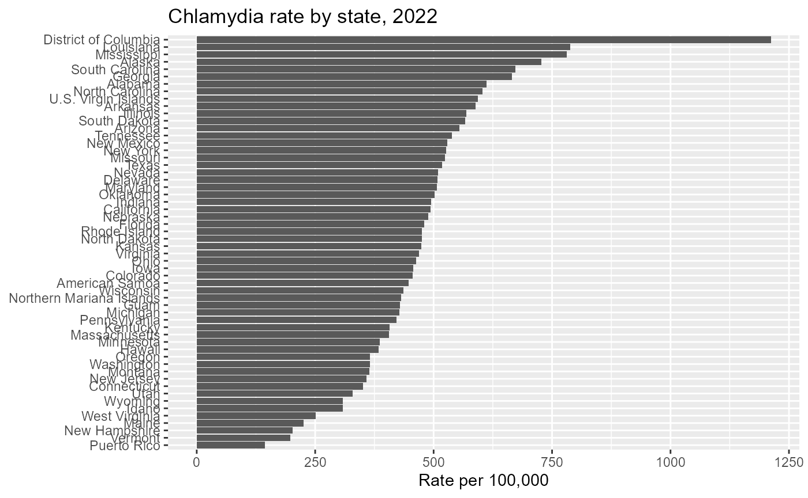
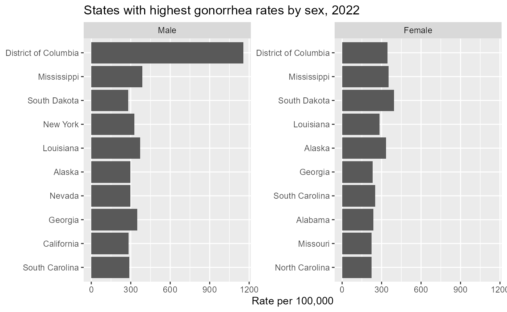
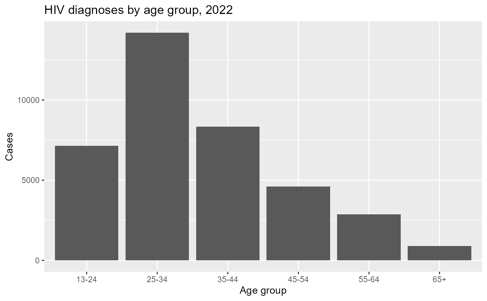
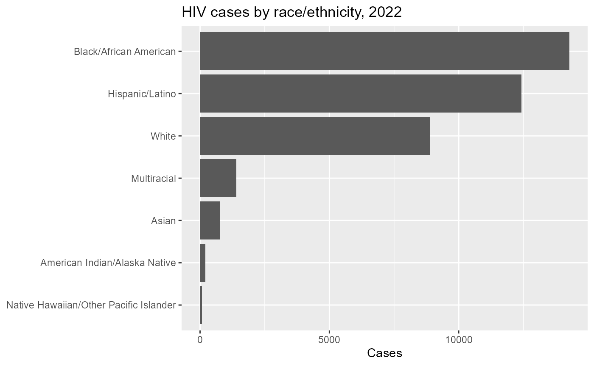
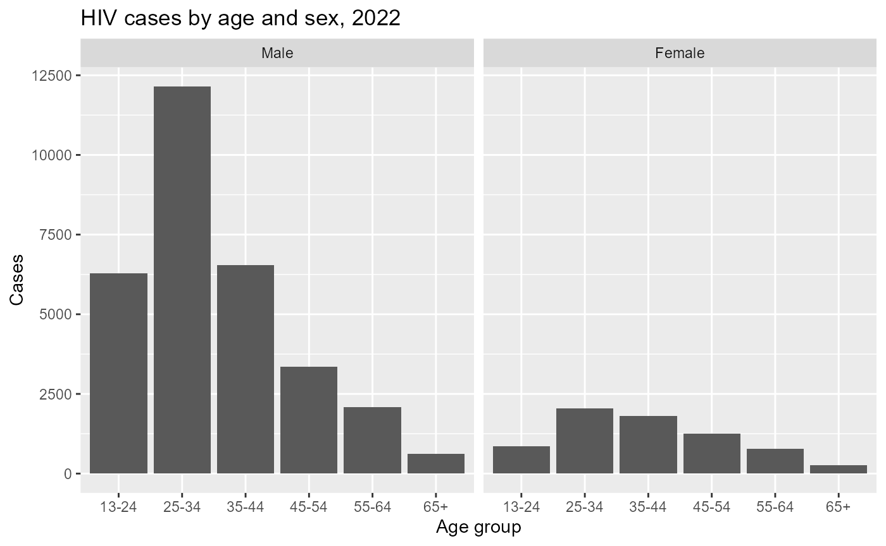
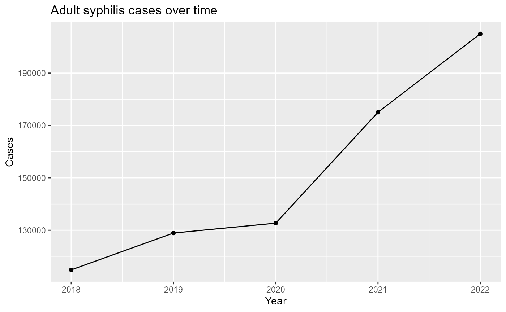

CDCAtlas provides R functions for retrieving public health surveillance data from CDC AtlasPlus.
This vignette introduces common use patterns:
- retrieving state- and county-level data
- querying different diseases
- using sex, age, and race/ethnicity stratification
- comparing rates across groups
- preparing AtlasPlus data for plotting and analysis
This vignette does not cover tract-level extrapolation. That is an advanced use case covered separately.
Basic query: state-level chlamydia data
A simple query retrieves one disease, one geography level, and one year.
chlamydia_state <- get_atlas(
disease = "chlamydia",
geography = "state",
year = 2022
)
head(chlamydia_state)
#> indicator year geography data_status race_ethnicity sex
#> 1 Chlamydia 2022 Alabama Not Suppressed All races/ethnicities Both sexes
#> 2 Chlamydia 2022 Alaska Not Suppressed All races/ethnicities Both sexes
#> 3 Chlamydia 2022 Arizona Not Suppressed All races/ethnicities Both sexes
#> 4 Chlamydia 2022 Arkansas Not Suppressed All races/ethnicities Both sexes
#> 5 Chlamydia 2022 California Not Suppressed All races/ethnicities Both sexes
#> 6 Chlamydia 2022 Colorado Not Suppressed All races/ethnicities Both sexes
#> age transmission rate100000 cases population
#> 1 All age groups All transmission categories 612.1 31060 5074296
#> 2 All age groups All transmission categories 727.7 5338 733583
#> 3 All age groups All transmission categories 554.4 40796 7359197
#> 4 All age groups All transmission categories 588.3 17918 3045637
#> 5 All age groups All transmission categories 493.6 192647 39029342
#> 6 All age groups All transmission categories 456.3 26646 5839926
#> lowerci_rate upperci_rate rse lowerci_cases upperci_cases fips
#> 1 NA NA NA NA NA 01
#> 2 NA NA NA NA NA 02
#> 3 NA NA NA NA NA 04
#> 4 NA NA NA NA NA 05
#> 5 NA NA NA NA NA 06
#> 6 NA NA NA NA NA 08The returned object is a data frame that can be used directly with tidyverse tools.
glimpse(chlamydia_state)
#> Rows: 57
#> Columns: 17
#> $ indicator <fct> Chlamydia, Chlamydia, Chlamydia, Chlamydia, Chlamydia, …
#> $ year <dbl> 2022, 2022, 2022, 2022, 2022, 2022, 2022, 2022, 2022, 2…
#> $ geography <fct> Alabama, Alaska, Arizona, Arkansas, California, Colorad…
#> $ data_status <fct> Not Suppressed, Not Suppressed, Not Suppressed, Not Sup…
#> $ race_ethnicity <fct> All races/ethnicities, All races/ethnicities, All races…
#> $ sex <fct> Both sexes, Both sexes, Both sexes, Both sexes, Both se…
#> $ age <fct> All age groups, All age groups, All age groups, All age…
#> $ transmission <fct> All transmission categories, All transmission categorie…
#> $ rate100000 <dbl> 612.1, 727.7, 554.4, 588.3, 493.6, 456.3, 351.3, 508.3,…
#> $ cases <dbl> 31060, 5338, 40796, 17918, 192647, 26646, 12738, 5177, …
#> $ population <dbl> 5074296, 733583, 7359197, 3045637, 39029342, 5839926, 3…
#> $ lowerci_rate <dbl> NA, NA, NA, NA, NA, NA, NA, NA, NA, NA, NA, NA, NA, NA,…
#> $ upperci_rate <dbl> NA, NA, NA, NA, NA, NA, NA, NA, NA, NA, NA, NA, NA, NA,…
#> $ rse <dbl> NA, NA, NA, NA, NA, NA, NA, NA, NA, NA, NA, NA, NA, NA,…
#> $ lowerci_cases <dbl> NA, NA, NA, NA, NA, NA, NA, NA, NA, NA, NA, NA, NA, NA,…
#> $ upperci_cases <dbl> NA, NA, NA, NA, NA, NA, NA, NA, NA, NA, NA, NA, NA, NA,…
#> $ fips <chr> "01", "02", "04", "05", "06", "08", "09", "10", "11", "…Plot state-level rates
chlamydia_state |>
filter(!is.na(rate100000)) |>
ggplot(aes(x = reorder(geography, rate100000), y = rate100000)) +
geom_col() +
coord_flip() +
labs(
title = "Chlamydia rate by state, 2022",
x = NULL,
y = "Rate per 100,000"
)
Query county-level data
AtlasPlus can also return county-level data for supported diseases.
chlamydia_county <- get_atlas(
disease = "chlamydia",
geography = "county",
year = 2022
)
head(chlamydia_county)
#> indicator year geography data_status race_ethnicity
#> 1 Chlamydia 2022 Autauga County, AL Not Suppressed All races/ethnicities
#> 2 Chlamydia 2022 Baldwin County, AL Not Suppressed All races/ethnicities
#> 3 Chlamydia 2022 Barbour County, AL Not Suppressed All races/ethnicities
#> 4 Chlamydia 2022 Bibb County, AL Not Suppressed All races/ethnicities
#> 5 Chlamydia 2022 Blount County, AL Not Suppressed All races/ethnicities
#> 6 Chlamydia 2022 Bullock County, AL Not Suppressed All races/ethnicities
#> sex age transmission rate100000 cases
#> 1 Both sexes All age groups All transmission categories 497.0 297
#> 2 Both sexes All age groups All transmission categories 336.8 830
#> 3 Both sexes All age groups All transmission categories 809.5 200
#> 4 Both sexes All age groups All transmission categories 418.1 92
#> 5 Both sexes All age groups All transmission categories 305.8 182
#> 6 Both sexes All age groups All transmission categories 735.1 75
#> population lowerci_rate upperci_rate rse lowerci_cases upperci_cases fips
#> 1 59759 NA NA NA NA NA 01001
#> 2 246435 NA NA NA NA NA 01003
#> 3 24706 NA NA NA NA NA 01005
#> 4 22005 NA NA NA NA NA 01007
#> 5 59512 NA NA NA NA NA 01009
#> 6 10202 NA NA NA NA NA 01011A common workflow is to identify counties with the highest reported rates.
chlamydia_county |>
filter(!is.na(rate100000)) |>
arrange(desc(rate100000)) |>
select(geography, cases, rate100000) |>
head(10)
#> geography cases rate100000
#> 1 Reeves County, TX 552 4277.4
#> 2 Todd County, SD 340 3687.6
#> 3 Kusilvak Census Area, AK 287 3467.0
#> 4 Dewey County, SD 174 3385.2
#> 5 Bethel Census Area, AK 528 2892.0
#> 6 Nome Census Area, AK 281 2857.1
#> 7 Oglala Lakota County, SD 359 2655.5
#> 8 Mellette County, SD 40 2114.2
#> 9 Northwest Arctic Borough, AK 150 2020.7
#> 10 Tunica County, MS 186 1966.6Stratification by sex
Many AtlasPlus endpoints support stratification. For example, we can retrieve state-level gonorrhea data by sex.
gonorrhea_sex <- get_atlas(
disease = "gonorrhea",
geography = "state",
year = 2022,
stratify_by = "sex"
)
head(gonorrhea_sex)
#> indicator year geography data_status race_ethnicity sex
#> 1 Gonorrhea 2022 Alabama Not Suppressed All races/ethnicities Male
#> 2 Gonorrhea 2022 Alabama Not Suppressed All races/ethnicities Female
#> 3 Gonorrhea 2022 Alaska Not Suppressed All races/ethnicities Male
#> 4 Gonorrhea 2022 Alaska Not Suppressed All races/ethnicities Female
#> 5 Gonorrhea 2022 Arizona Not Suppressed All races/ethnicities Male
#> 6 Gonorrhea 2022 Arizona Not Suppressed All races/ethnicities Female
#> age transmission rate100000 cases population
#> 1 All age groups All transmission categories 279.7 6901 2467360
#> 2 All age groups All transmission categories 238.3 6213 2606936
#> 3 All age groups All transmission categories 296.7 1145 385947
#> 4 All age groups All transmission categories 333.4 1159 347636
#> 5 All age groups All transmission categories 270.1 9936 3679034
#> 6 All age groups All transmission categories 177.2 6522 3680163
#> lowerci_rate upperci_rate rse lowerci_cases upperci_cases fips
#> 1 NA NA NA NA NA 01
#> 2 NA NA NA NA NA 01
#> 3 NA NA NA NA NA 02
#> 4 NA NA NA NA NA 02
#> 5 NA NA NA NA NA 04
#> 6 NA NA NA NA NA 04Now we can compare rates by sex within each state.
gonorrhea_sex |>
filter(!is.na(rate100000)) |>
group_by(sex) |>
slice_max(rate100000, n = 10, with_ties = FALSE) |>
ungroup() |>
ggplot(aes(x = reorder(geography, rate100000), y = rate100000)) +
geom_col() +
coord_flip() +
facet_wrap(~ sex, scales = "free_y") +
labs(
title = "States with highest gonorrhea rates by sex, 2022",
x = NULL,
y = "Rate per 100,000"
)
Stratification by age
AtlasPlus also supports age-stratified queries for many disease/geography combinations.
hiv_age <- get_atlas(
disease = "hiv",
geography = "state",
year = 2022,
stratify_by = "age"
)
head(hiv_age)
#> indicator year geography data_status race_ethnicity sex
#> 1 HIV diagnoses 2022 Alabama Not Suppressed All races/ethnicities Both sexes
#> 2 HIV diagnoses 2022 Alabama Not Suppressed All races/ethnicities Both sexes
#> 3 HIV diagnoses 2022 Alabama Not Suppressed All races/ethnicities Both sexes
#> 4 HIV diagnoses 2022 Alabama Not Suppressed All races/ethnicities Both sexes
#> 5 HIV diagnoses 2022 Alabama Not Suppressed All races/ethnicities Both sexes
#> 6 HIV diagnoses 2022 Alabama Not Suppressed All races/ethnicities Both sexes
#> age transmission rate100000 cases population lowerci_rate
#> 1 13-24 All transmission categories 19.6 160 814557 NA
#> 2 25-34 All transmission categories 34.4 227 659372 NA
#> 3 35-44 All transmission categories 23.0 144 625842 NA
#> 4 45-54 All transmission categories 13.6 84 619235 NA
#> 5 55-64 All transmission categories 7.7 51 660469 NA
#> 6 65+ All transmission categories 1.3 12 903176 NA
#> upperci_rate rse lowerci_cases upperci_cases fips
#> 1 NA NA NA NA 01
#> 2 NA NA NA NA 01
#> 3 NA NA NA NA 01
#> 4 NA NA NA NA 01
#> 5 NA NA NA NA 01
#> 6 NA NA NA NA 01We can summarize national patterns by aggregating across states.
hiv_age_summary <- hiv_age |>
group_by(age, indicator) |>
summarize(
cases = sum(cases, na.rm = TRUE),
.groups = "drop"
)
hiv_age_summary
#> # A tibble: 12 × 3
#> age indicator cases
#> <fct> <fct> <dbl>
#> 1 13-24 HIV diagnoses 7151
#> 2 13-24 HIV prevalence 28335
#> 3 25-34 HIV diagnoses 14200
#> 4 25-34 HIV prevalence 166715
#> 5 35-44 HIV diagnoses 8340
#> 6 35-44 HIV prevalence 211977
#> 7 45-54 HIV diagnoses 4595
#> 8 45-54 HIV prevalence 237860
#> 9 55-64 HIV diagnoses 2861
#> 10 55-64 HIV prevalence 295885
#> 11 65+ HIV diagnoses 889
#> 12 65+ HIV prevalence 162026
hiv_age_summary |>
filter(indicator=="HIV diagnoses")|>
ggplot(mapping=aes(x = age, y = cases)) +
geom_col() +
labs(
title = "HIV diagnoses by age group, 2022",
x = "Age group",
y = "Cases"
)
Stratification by race/ethnicity
CDC AtlasPlus commonly uses a combined race/ethnicity variable rather than separate race and Hispanic ethnicity fields.
hiv_race <- get_atlas(
disease = "hiv",
geography = "state",
year = 2022,
stratify_by = "race"
)
head(hiv_race)
#> indicator year geography data_status
#> 1 HIV diagnoses 2022 Alabama Not Suppressed
#> 2 HIV diagnoses 2022 Alabama Not Suppressed
#> 3 HIV diagnoses 2022 Alabama Not Suppressed
#> 4 HIV diagnoses 2022 Alabama Not Suppressed
#> 5 HIV diagnoses 2022 Alabama Not Suppressed
#> 6 HIV diagnoses 2022 Alabama Not Suppressed
#> race_ethnicity sex age
#> 1 American Indian/Alaska Native Both sexes Ages 13 years and older
#> 2 Asian Both sexes Ages 13 years and older
#> 3 Black/African American Both sexes Ages 13 years and older
#> 4 Hispanic/Latino Both sexes Ages 13 years and older
#> 5 Native Hawaiian/Other Pacific Islander Both sexes Ages 13 years and older
#> 6 White Both sexes Ages 13 years and older
#> transmission rate100000 cases population lowerci_rate
#> 1 All transmission categories 7.9 2 25396 NA
#> 2 All transmission categories 1.5 1 67008 NA
#> 3 All transmission categories 38.2 424 1109782 NA
#> 4 All transmission categories 20.6 42 203913 NA
#> 5 All transmission categories 45.6 1 2194 NA
#> 6 All transmission categories 5.9 166 2817331 NA
#> upperci_rate rse lowerci_cases upperci_cases fips
#> 1 NA NA NA NA 01
#> 2 NA NA NA NA 01
#> 3 NA NA NA NA 01
#> 4 NA NA NA NA 01
#> 5 NA NA NA NA 01
#> 6 NA NA NA NA 01A useful first look is to compare total reported cases by race/ethnicity.
hiv_race_summary <- hiv_race |>
group_by(race_ethnicity, indicator) |>
summarize(
cases = sum(cases, na.rm = TRUE),
.groups = "drop"
) |>
arrange(desc(cases))
hiv_race_summary
#> # A tibble: 14 × 3
#> race_ethnicity indicator cases
#> <fct> <fct> <dbl>
#> 1 Black/African American HIV prevalence 427114
#> 2 White HIV prevalence 301263
#> 3 Hispanic/Latino HIV prevalence 287669
#> 4 Multiracial HIV prevalence 65407
#> 5 Asian HIV prevalence 16821
#> 6 Black/African American HIV diagnoses 14277
#> 7 Hispanic/Latino HIV diagnoses 12428
#> 8 White HIV diagnoses 8878
#> 9 American Indian/Alaska Native HIV prevalence 3034
#> 10 Multiracial HIV diagnoses 1402
#> 11 Native Hawaiian/Other Pacific Islander HIV prevalence 877
#> 12 Asian HIV diagnoses 773
#> 13 American Indian/Alaska Native HIV diagnoses 206
#> 14 Native Hawaiian/Other Pacific Islander HIV diagnoses 72
hiv_race_summary |>
filter(indicator=="HIV diagnoses")|>
ggplot(mapping =aes(x = reorder(race_ethnicity, cases), y = cases)) +
geom_col() +
coord_flip() +
labs(
title = "HIV cases by race/ethnicity, 2022",
x = NULL,
y = "Cases"
)
Multiple stratification variables
You can request combinations of stratification variables when supported by the underlying AtlasPlus endpoint. For example, HIV data can be queried by both sex and age.
hiv_age_sex <- get_atlas(
disease = "hiv",
geography = "state",
year = 2022,
stratify_by = c("sex", "age")
)
head(hiv_age_sex)
#> indicator year geography data_status race_ethnicity sex age
#> 1 HIV diagnoses 2022 Alabama Not Suppressed All races/ethnicities Male 13-24
#> 2 HIV diagnoses 2022 Alabama Not Suppressed All races/ethnicities Male 25-34
#> 3 HIV diagnoses 2022 Alabama Not Suppressed All races/ethnicities Male 35-44
#> 4 HIV diagnoses 2022 Alabama Not Suppressed All races/ethnicities Male 45-54
#> 5 HIV diagnoses 2022 Alabama Not Suppressed All races/ethnicities Male 55-64
#> 6 HIV diagnoses 2022 Alabama Not Suppressed All races/ethnicities Male 65+
#> transmission rate100000 cases population lowerci_rate
#> 1 All transmission categories 34.1 140 411071 NA
#> 2 All transmission categories 57.7 188 325836 NA
#> 3 All transmission categories 31.9 97 304317 NA
#> 4 All transmission categories 18.9 57 301976 NA
#> 5 All transmission categories 10.4 33 318526 NA
#> 6 All transmission categories 1.3 5 399281 NA
#> upperci_rate rse lowerci_cases upperci_cases fips
#> 1 NA NA NA NA 01
#> 2 NA NA NA NA 01
#> 3 NA NA NA NA 01
#> 4 NA NA NA NA 01
#> 5 NA NA NA NA 01
#> 6 NA NA NA NA 01This allows direct comparison of age distributions by sex.
hiv_age_sex_summary <- hiv_age_sex |>
group_by(sex, age, indicator) |>
summarize(
cases = sum(cases, na.rm = TRUE),
.groups = "drop"
)
hiv_age_sex_summary
#> # A tibble: 24 × 4
#> sex age indicator cases
#> <fct> <fct> <fct> <dbl>
#> 1 Male 13-24 HIV diagnoses 6283
#> 2 Male 13-24 HIV prevalence 22927
#> 3 Male 25-34 HIV diagnoses 12143
#> 4 Male 25-34 HIV prevalence 141428
#> 5 Male 35-44 HIV diagnoses 6534
#> 6 Male 35-44 HIV prevalence 164437
#> 7 Male 45-54 HIV diagnoses 3346
#> 8 Male 45-54 HIV prevalence 172026
#> 9 Male 55-64 HIV diagnoses 2076
#> 10 Male 55-64 HIV prevalence 226017
#> # ℹ 14 more rows
hiv_age_sex_summary |>
filter(indicator=="HIV diagnoses")|>
ggplot(aes(x = age, y = cases)) +
geom_col() +
facet_wrap(~ sex) +
labs(
title = "HIV cases by age and sex, 2022",
x = "Age group",
y = "Cases"
)
Comparing years
You can also query multiple years and compare trends over time.
syphilis_years <- get_atlas(
disease = "adult syphilis",
geography = "state",
year = 2018:2022
)
head(syphilis_years)
#> indicator year geography data_status
#> 1 Primary and Secondary Syphilis 2018 Alabama Not Suppressed
#> 2 Primary and Secondary Syphilis 2019 Alabama Not Suppressed
#> 3 Primary and Secondary Syphilis 2020 Alabama Not Suppressed
#> 4 Primary and Secondary Syphilis 2021 Alabama Not Suppressed
#> 5 Primary and Secondary Syphilis 2022 Alabama Not Suppressed
#> 6 Primary and Secondary Syphilis 2018 Alaska Not Suppressed
#> race_ethnicity sex age transmission
#> 1 All races/ethnicities Both sexes All age groups All transmission categories
#> 2 All races/ethnicities Both sexes All age groups All transmission categories
#> 3 All races/ethnicities Both sexes All age groups All transmission categories
#> 4 All races/ethnicities Both sexes All age groups All transmission categories
#> 5 All races/ethnicities Both sexes All age groups All transmission categories
#> 6 All races/ethnicities Both sexes All age groups All transmission categories
#> rate100000 cases population lowerci_rate upperci_rate rse lowerci_cases
#> 1 9.8 477 4887681 NA NA NA NA
#> 2 12.6 618 4903185 NA NA NA NA
#> 3 10.5 529 5024279 NA NA NA NA
#> 4 15.1 761 5039877 NA NA NA NA
#> 5 23.5 1190 5074296 NA NA NA NA
#> 6 7.5 55 735139 NA NA NA NA
#> upperci_cases fips
#> 1 NA 01
#> 2 NA 01
#> 3 NA 01
#> 4 NA 01
#> 5 NA 01
#> 6 NA 02For example, compare national totals by year.
syphilis_trend <- syphilis_years |>
group_by(year, indicator) |>
summarize(
cases = sum(cases, na.rm = TRUE),
.groups = "drop"
)
syphilis_trend
#> # A tibble: 15 × 3
#> year indicator cases
#> <dbl> <fct> <dbl>
#> 1 2018 Primary and Secondary Syphilis 35447
#> 2 2018 Early Non-Primary, Non-Secondary Syphilis 39119
#> 3 2018 Unknown Duration or Late Syphilis 40285
#> 4 2019 Primary and Secondary Syphilis 39327
#> 5 2019 Early Non-Primary, Non-Secondary Syphilis 42118
#> 6 2019 Unknown Duration or Late Syphilis 47473
#> 7 2020 Primary and Secondary Syphilis 41942
#> 8 2020 Early Non-Primary, Non-Secondary Syphilis 43486
#> 9 2020 Unknown Duration or Late Syphilis 47256
#> 10 2021 Primary and Secondary Syphilis 54108
#> 11 2021 Early Non-Primary, Non-Secondary Syphilis 52247
#> 12 2021 Unknown Duration or Late Syphilis 68691
#> 13 2022 Primary and Secondary Syphilis 59404
#> 14 2022 Early Non-Primary, Non-Secondary Syphilis 57450
#> 15 2022 Unknown Duration or Late Syphilis 88121
syphilis_trend |>
ggplot(mapping= aes(x = year, y = cases, color=indicator, group=indicator)) +
geom_line() +
geom_point() +
labs(
title = "Adult syphilis cases over time",
x = "Year",
y = "Cases"
)
Working with censored or missing values
CDC AtlasPlus may suppress or censor some values, especially for
small counts. Depending on the disease and geography, cases
or rate100000 may be missing.
A common first step is to inspect missingness.
Choosing diseases and stratification variables
The available diseases and stratification variables depend on CDC AtlasPlus. Common disease values include:
get_atlas(disease = "hiv", geography = "state", year = 2022)
get_atlas(disease = "chlamydia", geography = "state", year = 2022)
get_atlas(disease = "gonorrhea", geography = "state", year = 2022)
get_atlas(disease = "adult syphilis", geography = "state", year = 2022)
get_atlas(disease = "tuberculosis", geography = "state", year = 2022)Next steps
After getting comfortable with basic queries, consider:
- querying multiple diseases
- comparing state and county results
- using sex, age, and race/ethnicity stratification
- joining AtlasPlus data to Census or spatial data
- using advanced vignettes for tract-level extrapolation and geographic access analyses
See ?get_atlas for full argument documentation.